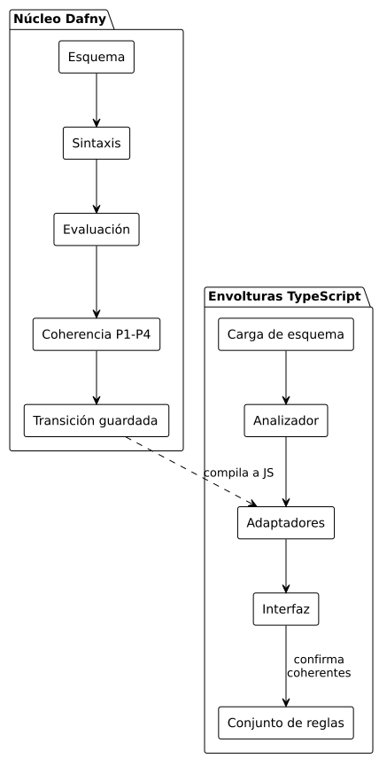
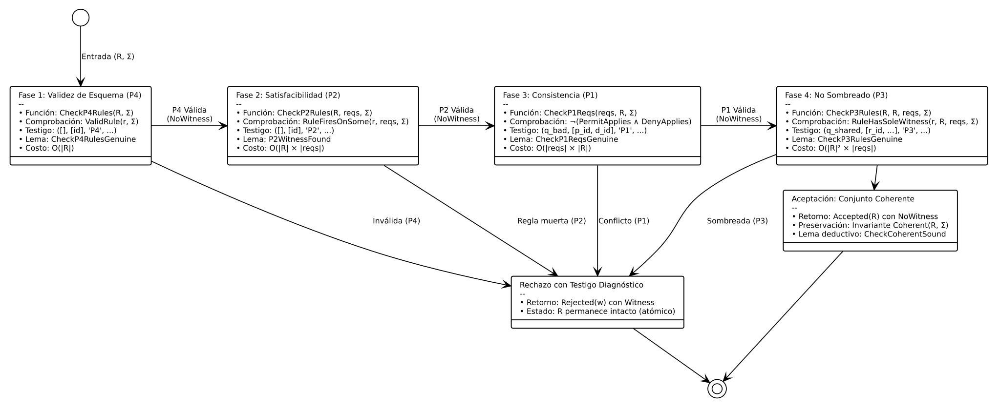
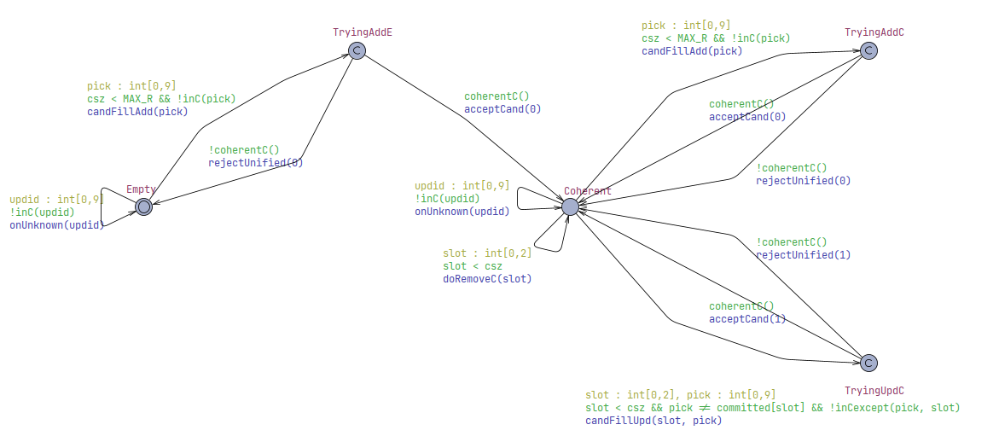
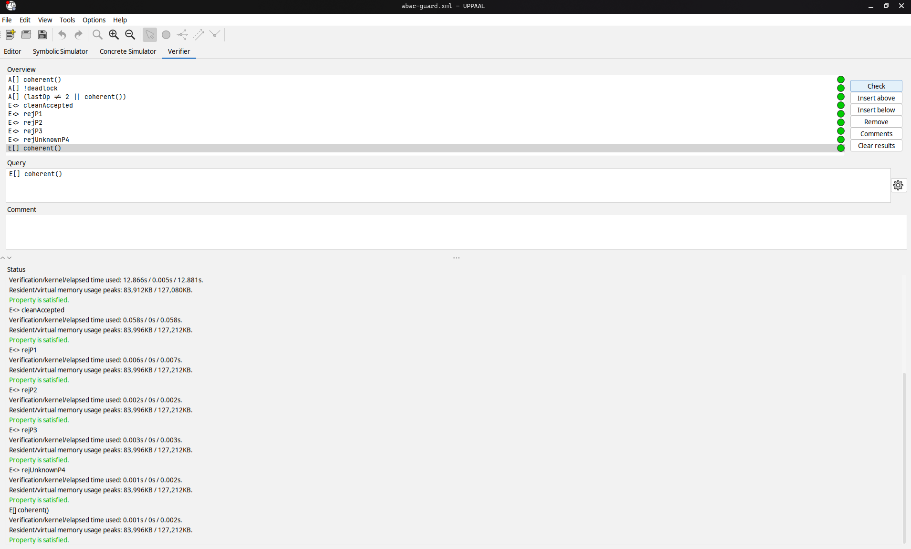
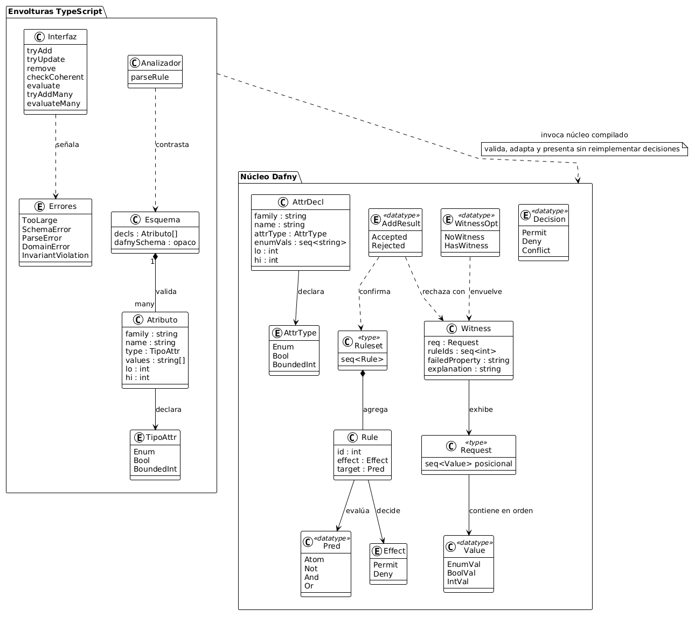
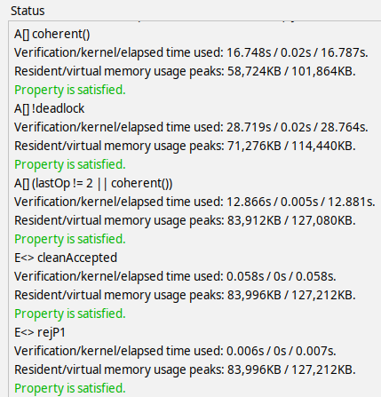
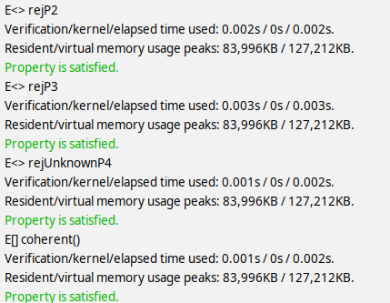

Verificación formal de coherencia en políticas ABAC
Garantías matemáticas para evitar bloqueos indebidos y filtraciones de datos en sistemas de autorización
El dolor en entornos críticos: salud y organizaciones públicas
La administración manual de directivas de acceso introduce fallas lógicas que comprometen vidas y datos reservados
Escenario de Urgencia Hospitalaria
En un centro médico, las autorizaciones dependen de turnos, guardias y condiciones de emergencia. Una contradicción inadvertida entre directivas puede bloquear el acceso de un cirujano a un expediente clínico crítico en plena intervención quirúrgica.
La Causa Raíz: Crecimiento y Explosión Combinatoria
El estándar NIST SP 800-162 formula directivas sobre cuatro familias de atributos: sujeto, recurso, acción y entorno. Con múltiples atributos discretos, el espacio cartesiano de solicitudes posibles supera con rapidez las decenas de miles de combinaciones.
Tres fallas silenciosas que los tests tradicionales no logran detectar
Clasificación canónica de defectos lógicos en políticas de control de acceso
Contradicción
Una misma solicitud concreta activa simultáneamente una regla de Permiso y una de Denegación. Al carecer de resolución matemática, el veredicto en producción queda a merced del orden de evaluación o la implementación del motor.
Regla Insatisfacible
Directiva con condiciones mutuamente incompatibles sobre los rangos del esquema. La regla no puede activarse bajo ninguna combinación válida de atributos, constituyendo código muerto dentro de la política.
Sombreado
Directiva completamente cubierta y anulada por reglas preexistentes de mayor generalidad. No existe ninguna solicitud en el sistema donde esta directiva decida en solitario, acumulando redundancia oculta.
Seguridad por construcción: certificar antes de desplegar
Demostración matemática en tiempo de diseño frente a la fragilidad del análisis en tiempo de ejecución
Invocación Externa a Solucionadores SMT
Los esquemas industriales tradicionales traducen consultas a solucionadores SMT en vivo durante cada petición o mediante análisis a posteriori sobre políticas ya desplegadas.
Núcleo Compilado y Guardas Inductivas
Los motores SMT Z3 y cvc5 operan únicamente en tiempo de desarrollo para certificar los lemas deductivos en Dafny. El artefacto final es JavaScript puro ejecutándose sin motores externos.
Arquitectura del sistema en tres capas integradas
Aislamiento estricto y dependencias unidireccionales entre especificación formal y entorno anfitrión

Cuatro etapas continuas de verificación con respuesta inmediata
Orden secuencial de comprobación P4 a P3, lemas deductivos asociados y emisión de testigos mínimos

El núcleo en Dafny: guardas atómicas y lemas de preservación
Demostración matemática automatizada mediante los solucionadores SMT Z3 y cvc5
var w := CheckCoherent(R + [r], s);
if w.NoWitness? then Accepted(R + [r])
else Rejected(w.wit)
}
lemma AddPreserves(R: Ruleset, r: Rule, s: Schema)
ensures match TryAdd(R, r, s)
case Accepted(rs) => Coherent(rs, s)
case Rejected(_) => true
{
var w := CheckCoherent(R + [r], s);
if w == NoWitness {
CheckCoherentSound(R + [r], s);
}
}
Siete Lemas Deductivos Demostrados
Model checking en UPPAAL: ausencia de bloqueos e invariancia estricta
Validación exhaustiva de 9 consultas en lógica TCTL sobre el autómata de transición del administrador


Resultados de Comprobación Temporal
Frontera defensiva en TypeScript: paquete npm
Validación sintáctica estricta, adaptación de tipos y explicaciones comprensibles sin duplicar lógica formal

Componentes de Integración
Detección inmediata de conflictos y emisión de testigos mínimos
Comportamiento en terminal ante directivas conflictivas e incorporación atómica en casos de urgencia


Evidencia de Ejecución Real
Validación experimental y construcción sellada con Nix Flakes
Construcción sellada con Nix Flakes y verificación automatizada sobre escenarios canónicos
Banco de Pruebas Canónico
Suite automatizada con escenarios estructurados: clean, contradictory, unsatisfiable, shadowed y emergency-override, certificando la fidelidad del compilado.
Entorno Hermético con Nix Flakes
Declaración inmutable de compiladores, resolvedores SMT y dependencias exactas, garantizando reproducibilidad idéntica y trazable de todos los resultados.
Certeza matemática en sistemas de información reales
Demostramos que los métodos formales rigurosos se integran armónicamente con la ingeniería web moderna: generamos un componente certificado que garantiza seguridad por construcción sin penalizaciones de latencia en producción.